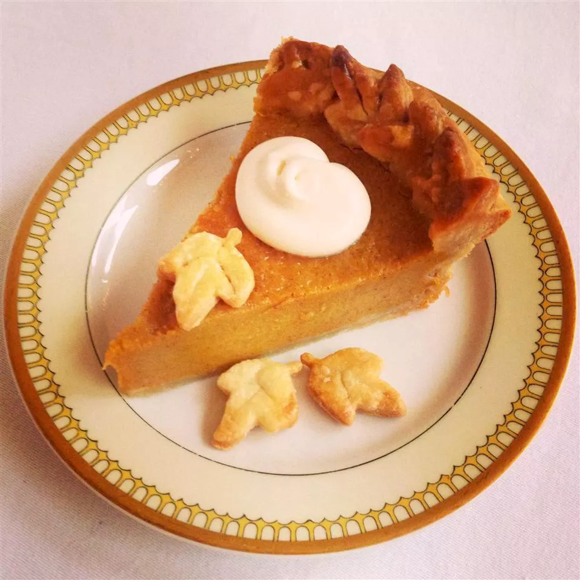

Chef John's Pumpkin Pie

- Prep Time:
- 15 mins
- Cook Time:
- 45 mins
- Serving:
- 8
Nutrition facts (per serving)
- 320 Calories
- 14g Fat
- 8g Protein
Description
This best pumpkin pie recipe came about after many years of experimentation. I've finally perfected what I think
is the ideal formula for a rich pumpkin pie that's much less likely to crack on top. Serve garnished with
whipped cream and freshly grated nutmeg.
Ingredients
- 1 (15 ounce) can pumpkin puree
- 3 egg yolks
- 1 large egg
- 1 (14 ounce) can sweetened condensed milk
- 1 teaspoon ground cinnamon
- ½ teaspoon ground ginger
- ½ teaspoon fine salt
- ¼ teaspoon freshly grated nutmeg
- ⅛ teaspoon Chinese 5-spice powder
- 1 9-inch unbaked pie crust
Directions
- Preheat the oven to 425 degrees F (220 degrees C).
- Whisk together pumpkin, egg yolks, and egg in a large bowl until smooth. Add sweetened condensed milk,
cinnamon, ginger, salt, nutmeg, and Chinese 5-spice powder; whisk until thoroughly combined.
- Line a 9-inch pie plate with pie crust; crimp edges.
- Pour filling into crust; lightly tap on the counter to release air bubbles.
- Bake in the preheated oven for 15 minutes.
- Reduce heat to 350 degrees F (175 degrees C) and bake until just set in the middle, 30 to 40 more
minutes. A
paring knife inserted into the filling, 1 inch from the edge, should come out clean. Allow to cool
completely before serving.
Return to Home Page